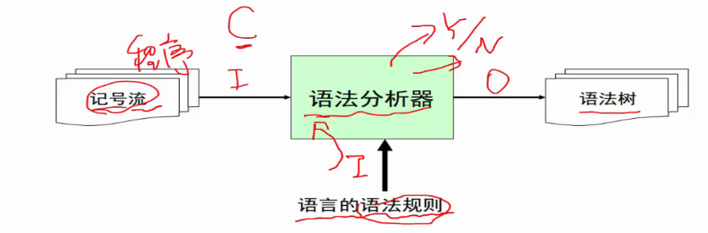
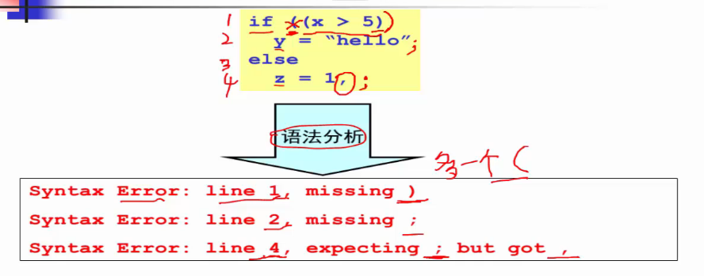
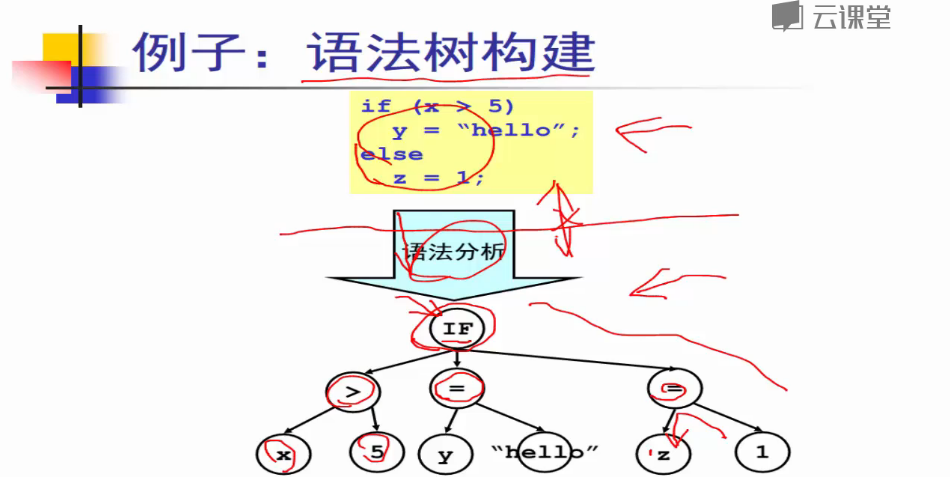
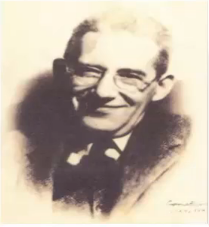
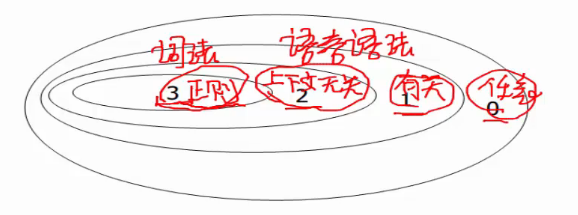
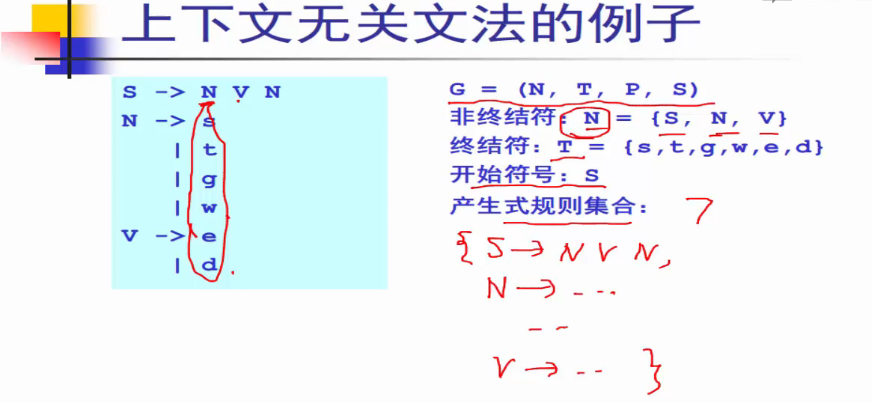
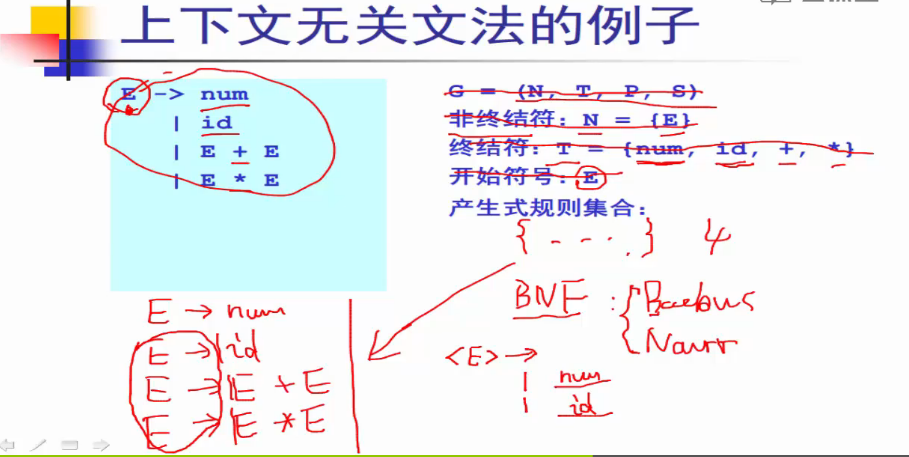
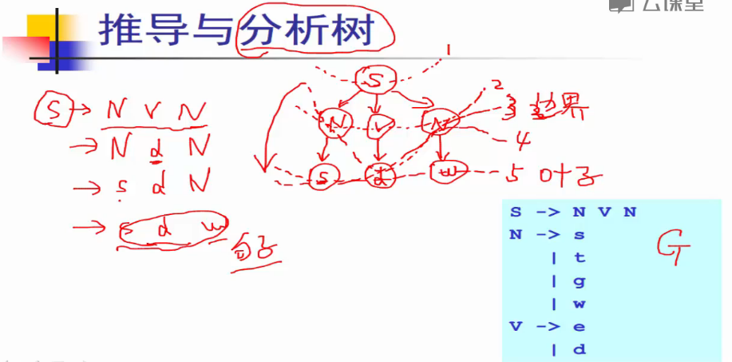
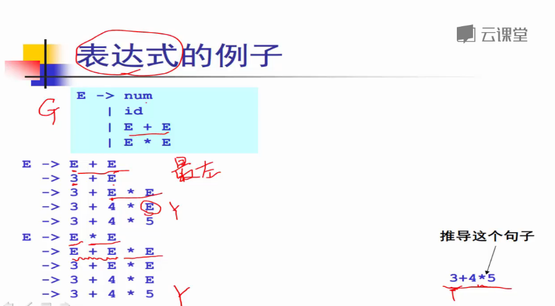
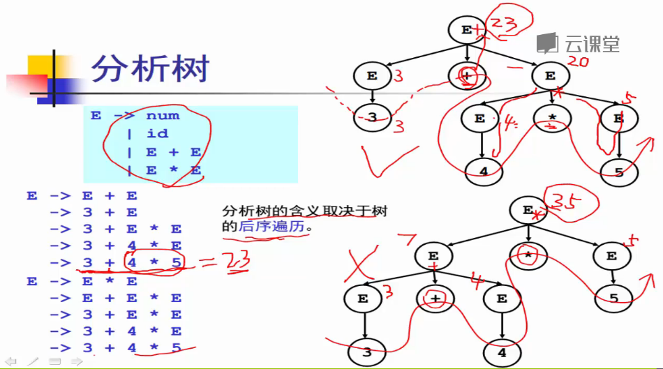

语法分析器Part1
2017-3-31 17:10:04 by 郭某某
※第一讲：语法分析器的任务※
语法分析器是前端比较核心的某块，负责语法部分，产生核心数据结构
生成抽象语法树
记号流->语法分析器（根据语法规则）->语法树

例子：语法错误反馈

例子：语法树的构建（大概结构）

本章学习路线数学理论：上下文无关文法（CFG）
-描述语言与法规则的教学工具
自顶向下分析：
-※递归下降分析算法（预测分析算法）
-※LL分析算法
自底向上分析：
-LR分析算法
※第二讲：上下文无关文法和推导※
记号流->语法分析器（根据语法规则）->语法树
那么语法规则是什么？
上下文无关文法历史背景
乔姆斯基文法体系

3-正则文法-词法
2-上下文无关文法-语言语法
1-上下文有关文法-没有广泛应用
0-任意文法-没有广泛应用

示例：自然语言中的句子的典型结构：
主语-谓语-宾语
名词-动词-名词
名词：{羊、老虎、草、水}
动词：{吃、喝}
句子（规则）：羊吃草、老虎喝水
规则：造句规则、逻辑规则
形式化
S->N V N
N->s|t|g|w
V->e|d
非终结符：{S,N,V}
终结符：{s,t,g,w,e,d}
开始负号：S
上下文无关文法G是一个四元组：G=(T,N,P,S)
T:终结符集合
N:非终结符集合
P:一组产生式规则集合
注：每条规则的形式:X->B1 B2 ... Bn 其中X∈N,Bi∈(T U N)
S:唯一的开始符号（非终结符）S∈N
上下文无关文法的例子1

上下文无关文法的例子2

推导：给定文法G，从G的开始符号S开始，用产生式的右部替换左侧的非终结符；
此过程不断重复，直到不出现非终结符为止；
最终的串称为句子。
S->N V N->N d N->N d g->t d g
最左推导
每次总是选择最左侧的符号进行替换
S->N V N->t V N->t d N->t d g
最右推导
每次总是选择最右侧的符号进行替换
S->N V N->N V g->N d g->t d g
※第三讲：分析树和二义性文法※

分析树#推导可以表达成树状结构
##和推导所用的顺序无关（最左、最有、其他）
#特点：
##树中的每个内部节点代表非终结符
##每个叶子结点代表终结符
##每一步推导代表如何从双亲节点生成他的直接孩子结点
表达式的例子

分析树

二义性文法#给定文法G，如果存在句子s，他有两颗不同的分析树，那么称G是二义性文法
#从编译器角度，二义性文法存在问题：
##同一个程序会员不同的含义
##因此程序运行结果不是唯一的
#解决方案：文法的重写
※第四讲：自顶向下分析※
※第五讲：递归下降分析算法※
以上内容学习自网易云课堂鸣谢！